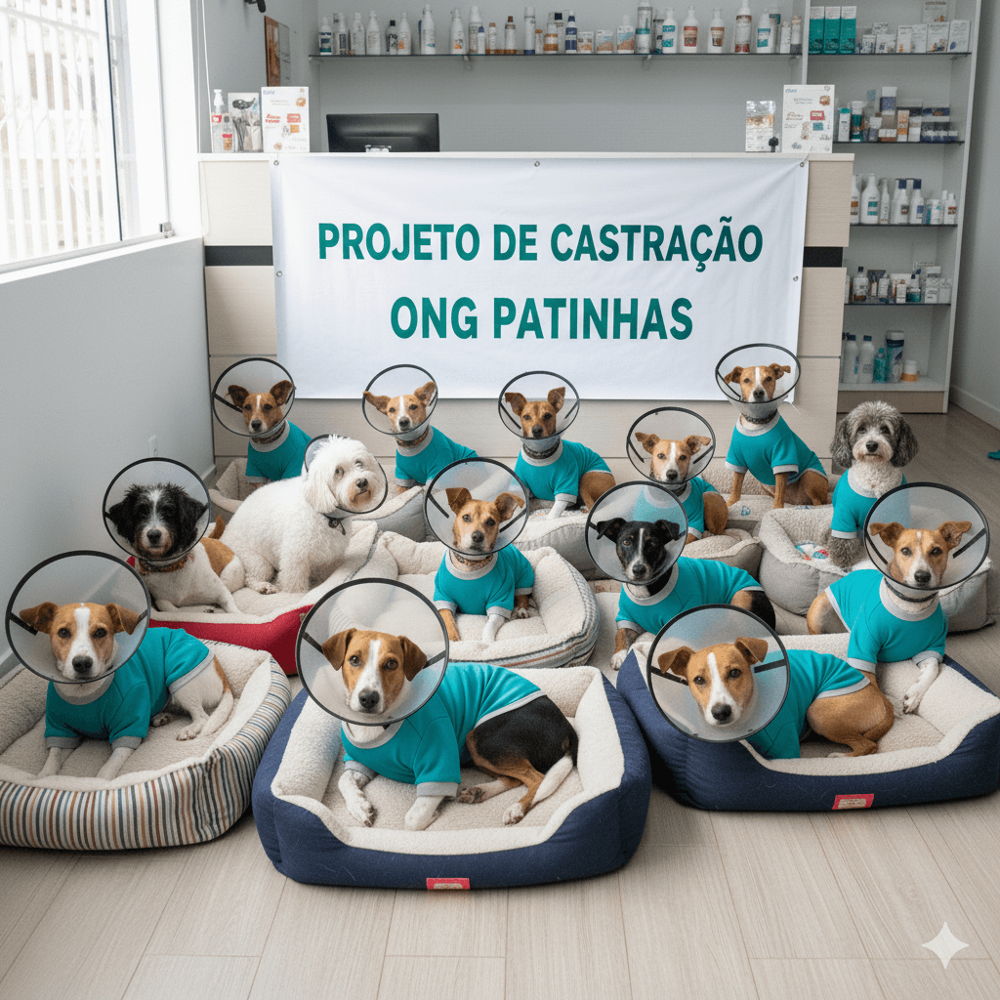

Projeto de Castração: Controle Populacional e Bem-Estar
SAÚDE ANIMAL E BEM-ESTAR
O Projeto de Castração é um pilar fundamental na luta contra o abandono e o sofrimento animal. Através de mutirões e parcerias, garantimos a castração gratuita e responsável dos cães resgatados sob nossos cuidados e, sempre que possível, de animais da comunidade de baixa renda.
Nosso objetivo é reduzir a superpopulação de animais de rua, prevenindo doenças e promovendo o bem-estar da comunidade. Contribua com este projeto e ajude a transformar vidas!
Tratamento e Reabilitação: Cuidado Imediato para Recomeços
CUIDADOS E REABILITAÇÃO DE ANIMAIS
Muitos dos cães que chegam à ONG Patinhas são vítimas de negligência, atropelamentos ou doenças graves. O Projeto Tratamento e Reabilitação existe para custear os altos gastos com urgências médicas, cirurgias complexas e tratamentos de longo prazo.
Este projeto garante que cada animal resgatado receba cuidados veterinários imediatos e completos, incluindo exames, medicamentos, internações e terapias de reabilitação. Sua contribuição garante a continuidade dos nossos projetos.